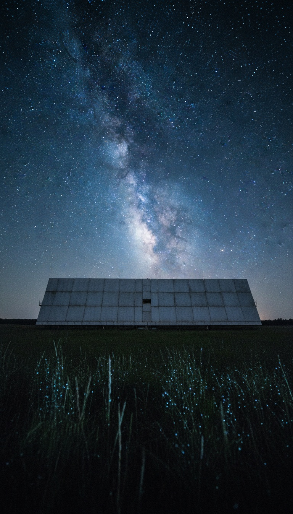

On the night of August 15, 1977, a radio telescope in Delaware, Ohio recorded 72 seconds of something that has never happened again, before or since, on any instrument on Earth.
The signal arrived on one narrow frequency. It rose and fell exactly the way a transmission from a fixed point in deep space should. It hit thirty times the background noise of the sky. And in the fifty years since, with bigger telescopes, better receivers, and hundreds of pointed searches at that exact patch of Sagittarius, the sky has stayed silent. That silence is the part they never explain.

The Night Nobody Was Watching
Big Ear was the radio telescope of the Ohio State University Radio Observatory, a flat aluminum reflector the size of three football fields sitting in a field in Delaware, Ohio. It did not stream data to a screen. It printed numbers onto continuous-feed paper from an IBM 1130, line after line, hour after hour, whether anyone was in the building or not.
Nobody was in the building. The signal came and went with no human witness, recorded only by ink on paper, which is exactly why nobody could reach the dial in time to follow it.
Days later a volunteer astronomer named Jerry Ehman sat down at his kitchen table with the stack of printouts. He was doing what he did every few days, scanning columns of low numbers, ones and twos, the ordinary hiss of the galaxy. Then he stopped.
Six Characters Climbing Off the Chart
The sequence read 6EQUJ5. Big Ear logged signal intensity in single characters, 0 through 9, then A through Z when the numbers ran out of room. The letter U meant an intensity of thirty. Ehman had never seen a U. Nobody at the observatory had ever seen a U.
Thirty times the background of the sky. Not a smear, not a wobble. A clean rise to a peak and a clean fall, six data points, one every twelve seconds, tracing the exact bell curve you get when a telescope's beam sweeps across a source that is sitting still in deep space.
Ehman took a red pen, circled the six characters, and wrote one word in the margin. Wow. That sheet of paper still exists. It is held by the Ohio History Connection in Columbus, Ohio, donated by Ehman himself, and you can go look at the red ink today.
1420 Megahertz Is Not a Random Number
The signal sat at 1420 megahertz. That is the emission frequency of neutral hydrogen, the most common atom in the universe, the one frequency every technical civilization in the galaxy discovers the moment it builds a radio telescope.
In 1959, physicists Giuseppe Cocconi and Philip Morrison published a paper in Nature arguing that if anyone out there wanted to be found, this is the frequency they would transmit on. It is the universal meeting point. Eighteen years later, a signal arrived on it.
There is a detail almost nobody mentions. The band around 1420 megahertz is protected by international agreement. No aircraft, no satellite, no ground station is permitted to transmit there, precisely because astronomers need it clean. Whatever transmitted on that frequency was either breaking a treaty from orbit or was not from here.
The one frequency reserved by treaty for listening to the universe is the frequency the universe used to answer.
Seventy Two Seconds Is the Telescope Confessing
Big Ear did not steer. It was a drift-scan instrument. The Earth's rotation dragged its beam across the sky, and any fixed celestial point stayed inside that beam for exactly 72 seconds. The signal lasted 72 seconds, rising for 36 and falling for 36, a textbook Gaussian.
That single fact eliminates the cheap explanations in one stroke. An aircraft crosses the beam in moments and smears the curve. A satellite moves against the stars and breaks the profile. A ground transmitter bouncing off debris flickers and stutters. The Wow signal did none of that. It behaved like a lighthouse bolted to the constellation Sagittarius, near the star group Chi Sagittarii, holding its position while the Earth turned underneath it.
Then the beam moved on, and there was no second dish tracking behind it to catch what came next. The 72 seconds we have are not the length of the transmission. They are the length of our attention.
The Comet Story Falls Apart on Contact
In 2017 an academic named Antonio Paris announced the signal was hydrogen gas around two comets, 266P/Christensen and P/2008 Y2 Gibbs, that were passing through the region in 1977. The press ran it as case closed. The astronomers who actually worked the data did not.
Jerry Ehman rejected it flatly, and the reasons stack fast. Comets shed hydrogen as a thin, sprawling cloud millions of kilometers wide, and thin sprawling clouds cannot produce a narrowband spike thirty times the sky background. The published positions of both comets on August 15, 1977 place them outside the beam Big Ear was pointing. And Big Ear had two feed horns scanning side by side minutes apart; a broad drifting comet cloud shows up in both, and the signal appeared in exactly one.
Here is the ending they skip. Comets are periodic. 266P/Christensen has come back around since 1977, on schedule, observable, measurable. Radio telescopes have looked. The comet returned. The signal did not. The one explanation on the table predicts a repeat, and the repeat never came.
Then They Tore the Telescope Down
Robert Gray, an astronomer who spent decades on this one case, pointed the Very Large Array in New Mexico at the Wow coordinates in 1995 and 1996, the most sensitive search of that patch ever run to that date. Harvard's META system swept it. Ehman himself went back with Big Ear for years. Fifty years of follow-up, the best instruments of three generations, and not one second of it has come back.
And Big Ear itself no longer exists. In 1998 the telescope that recorded the strongest candidate signal in the history of the search was demolished. The land was cleared to expand a golf course and a housing development. The instrument at the center of an unsolved question about whether we are alone was flattened for fairways.
One more thread refuses to die. In 2020, researcher Alberto Caballero combed the European Space Agency's Gaia star catalog for sun-like stars inside the Wow signal's coordinate window and found one, designated 2MASS 19281982-2640123, a near twin of our sun sitting roughly 1,800 light-years out in Sagittarius. A sun like ours, in the exact strip of sky the signal came from. That star is now a listed target for the next generation of listening.
So hold the full sequence in your head at once. A signal arrives on the one frequency reserved for first contact, at thirty times the sky, shaped exactly like a fixed point in deep space, from a strip of Sagittarius that contains a twin of our own sun. It lasts precisely as long as the telescope was capable of listening. Then it stops, forever, and the only machine that heard it gets bulldozed for a golf course.
A one-time broadcast is not how nature behaves. Pulsars repeat. Comets return. Interference recurs. The only kind of source that speaks once and goes dark is one that chooses to. Which leaves the question that has sat unanswered on a sheet of paper in Columbus, Ohio for fifty years: if it was a beacon that swept past us the way our beam swept past it, when does the beam come back around, and will anyone be listening when it does? Tell me in the comments. Was 1977 the year they found us?
Before you go
7 books the Vatican doesn't want you reading. Free PDF — the texts they cut, with sources. Joined by 140+ Inner Circle members.
No spam. Unsubscribe anytime.
Go deeper
The Hidden Canon, Vol. I — Enoch. Jubilees. Thomas. Mary. Judas. 90 pages, 14 chapters, every receipt cited. The books your Bible quietly removed.
Read the Canon →Books that informed this investigation
As an Amazon Associate, Hidden Epoch earns from qualifying purchases. Cost to you: nothing.
Research safely
The VPN we use to research without being tracked. First 3 months free.
Get NordVPN →